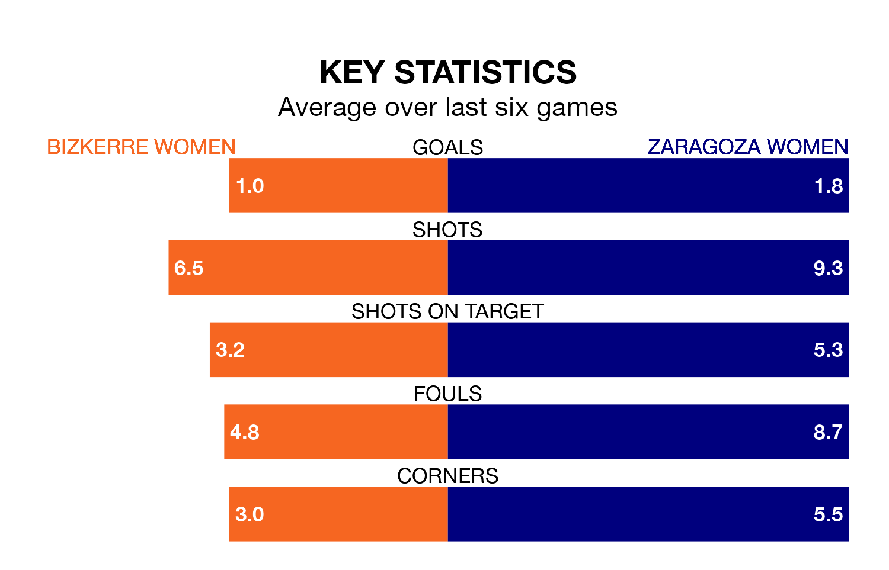

Bizkerre Women host Zaragoza Women in Sunday's early match looking to bounce back from defeat last time out in Segunda Federación Femenina.
Bizkerre, who sit zero in the league after 15 games, fell to a 2-1 away defeat to Huesca Women on January 7.
They face a Zaragoza side who picked up a win in their last match, a 3-0 victory against Athletic Club III Women, and who sit 16th in the table.
With 11 goals in 15 games so far this season, Bizkerre are the league's-14th-lowest scorers with 0.7 goals per game. And they are conceding at an average rate, letting in 20 goals at a rate of 1.3 per game.
Zaragoza, meanwhile, are above average scorers, with 1.4 goals per game, compared to a league average of 1.3. They have conceded 1.2 goals per game.
The home team are in bad form in Segunda Federación Femenina, with one win and a draw from their last six games.
With two wins and two draws over that period, the visitors' form is better – they have taken eight points from 18, compared to Bizkerre's four.
Updated: 15:34, 08/01/24